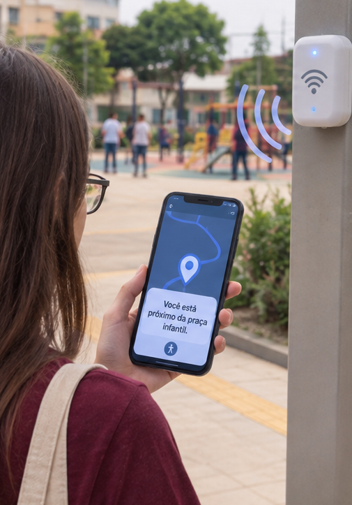

Sistemas de Navegação e Orientação por Proximidade (Beacons)
Dispositivos sem fio que transmitem informações de localização e orientação para smartphones, auxiliando pessoas com deficiência visual na exploração da praça.
Como funciona
Sensores Bluetooth Low Energy (BLE) são instalados em pontos estratégicos. Ao se aproximar deles, o celular recebe sinais que acionam orientações sonoras por meio de aplicativos e leitores de tela.
Benefícios
Promovem autonomia e segurança, permitindo identificar caminhos, acessos e pontos de interesse sem depender exclusivamente de terceiros.
ABNT NBR 9050:2020 — Seção 5 e Subseção 5.2.9; Lei nº 13.146/2015 (LBI) — Arts. 53 e 74.